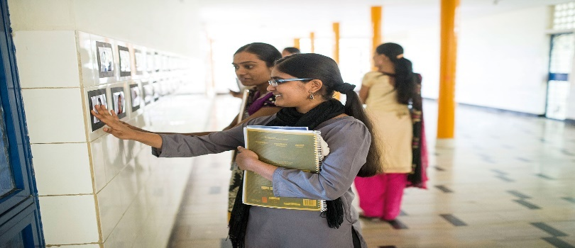
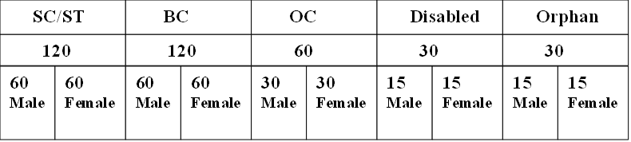

Special Scholarship Programme

It is a scholarship programme under which there is a programme called Special Education Programme (SEP) which has being eligible for only students who has scored 500+ marks in 10th class.
Key Points
Select 360 students each year.
RDT will take care of their education.
Provide financial assistance for eligible students in pursuing higher standard and professional degree in corporate colleges like Sri Chaitanya and Narayana ( Vijayawada, Kurnool, Hyderabad, Chittoor)
RDT will provide 100% financial assistance.
Eligibility criteria for SEP:
Student must have got 500+ Marks in SSC.
The canditate must get the minimum of 50% marks in both written test and SSC Marks to get eligible for the SEP.
RDT will conduct entrance exam based on 1:10 ratio.
Combined Weightage Score will be calculated and respective rank will be given.
Based upon the rank, the seat allotment will be done.
Seat Allotment
